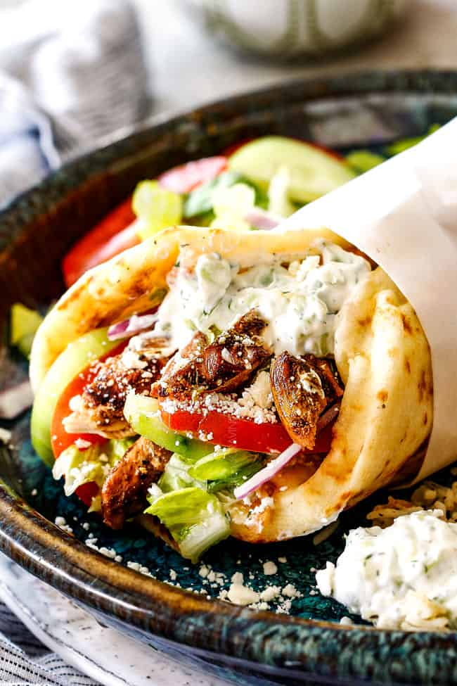

Chicken Gyros

Quick and easy 15 minute meal to make when on the go. The flavors of the gyro can be transffered to chicken with such ease. Opa!
Ingredients
- Chimichurri Seasoning
- Chicken Breasts, diced
- Grape Tomatoes
- Lemon Juice
- Naan Flatbread
- Shallot
- Spring Green Mix
- Tzatziki Dip
Steps
- Season chicken with a pinch of salt.
- Add diced chicken and seasoning blend to hot fry pan.
Stir occasionally until chicken reaches an internal temp of 165 Degrees.
- Halve tomatoes.
- Peel and slice shallot thinly.
- Add shallot and tomatoes to hot pan and cook 2 minutes.
- Add 2tbsp water and lemon juice. Stir until tomatoes are soft.
- Warm flatbreads in hot dry pan until golden brown.
- Plate dish, filling flatbreads with filling and topping with the spring mix and tzatziki dip.